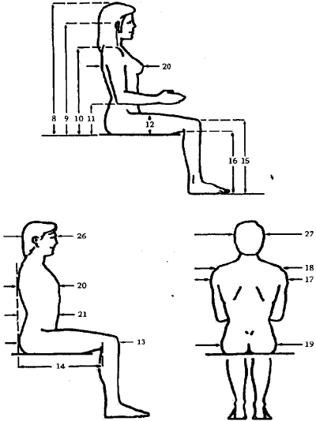
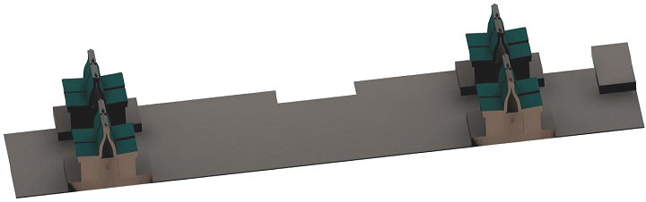
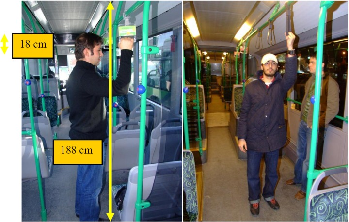

|
2.4. Sýrt Desteði
Sýrt desteði vücut duruþunun desteklenmesi ve kaslara gereksiz yüklenmeleri önlemesi açýsýndan çok önemlidir. Sýrt desteðinin yüksekliði iyi bir destek saðlamasý için 50-65 cm arasý olmalýdýr. Citaro'nun koltuklarý Þekil 1'de de görüldüðü gibi 61 cm ile bunu saðlamaktadýr.
Ancak sýrt desteðinin yüksekliðinden çok daha önemli olan, onun omuriliðin yapýsýna göre þekillendirilmiþ olmasýdýr. Lomber (belin üst kýsmý) destek bu bakýmdan çok önemlidir. Andersson ve diðerleri (1974) gövdenin dik durabilmesi için lomber tamponun en uç kýsmýnda sýrt desteðinin ana gövdesinden 4 cm kadar çýkýntý yapmasý gerektiðini belirtmiþtir. Ayrýca lomber tamponun oturma yüzeyinden optimum uzaklýðý ise Coleman ve diðerleri (1998) tarafýndan 19 cm olarak belirlenmiþtir. Þekil 1'de de görüldüðü gibi Citaro'da sýrt desteðine belli bir kontur verilmiþ olmasýna raðmen bu konturde belin üst kýsmýndaki kývrým atlanmýþ, dolayýsýyla kaslara yüklenmeden vücudun dik durabilmesi için çok önemli olan lomber destek saðlanmamýþtýr. Bu sýrt desteðinin en büyük handikapýný oluþturmaktadýr.

Þekil 2. Antropometrik Ölçüler
Sýrt desteði açýsýnýn optimum deðeri ise 100-110°'dir. Bundan daha yüksek bir açý vücudun üst kýsmýný aþýrý instabil yapacaðý için uygun deðildir. Citaro koltuklarýnýn sýrt desteði açýsý yaklaþýk 110°'dir. Bu da kriterlere uygundur. Bir diðer açý da koltuk yüzeyinin açýsýdýr. Pozitif bir koltuk açýsý yolcunun sýrt desteðiyle daha iyi temas etmesini saðlar ve koltuktan kaymayý engeller. Fakat yüksek bir koltuk açýsý da kalça - gövde açýsýný azaltacaðýndan ve oturup kalkmayý zorlaþtýracaðýndan 5-10°'lik bir koltuk açýsý optimumdur. Ancak Citaro'nun koltuklarýnda Þekil 1'de de görüldüðü gibi böyle bir açý kullanýlmamýþtýr.
2.5. Kolçaklar
Kolçaklar vücut duruþunu destekleyebilir ve oturup kalkarken özellikle yaþlýlar ve hamile bayanlar için yardýmcý olabilir (Hirao ve Kajiyama, 1994). Avrupa Standartlarýna (EN 1335-1) göre kolçaklar koltuk yüzeyinden 20-25 cm yükseklikte olmalýdýr. Citaro'da ise bu yükseklik Þekil 1'de de görüldüðü gibi 10 cm ile yeterli deðildir ve 5. yüzdelik bayan oturarak dirsek yüksekliði olan (Þekil 2'deki 11 no'lu ölçü) 18 cm'den dahi çok alçaktýr. Ayrýca kolçaklarýn önkolun etli kýsýmlarýný desteklemesi istenir ve çok iyi tamponlanmadan hassas sinirlerin bulunduðu dirseðin kemikli kýsmýna temas etmemelidir. Bunun için kolçakla sýrt desteði arasýnda minimum 10 cm'lik bir boþluk olmalýdýr (Pheasant ve Haslegrave, 2006). Bu boþluk Citaro'nun kolçaklarýnda 5 cm'de kalmýþtýr. Ancak bundan daha önemlisi kolçaklarýn sadece demirden yapýlmýþ olmasý ve kolla temas ettiði yerlerinin tamponlanmamýþ olmasýdýr. Bu kolda aþýrý basýnçlara neden olur.
Avrupa Standartlarýna (EN 1335-1) göre kolçaðýn faydalý olabilmesi için uzunluðunun en az 20 cm olmasý gerekmektedir. Bu standart ise 18 cm ile saðlanmýþ sayýlabilir. Sonuç olarak Citaro'nun tüm koltuklarýnda kolçak mevcut deðildir. Kolçaklý koltuklarda ise kolçak çok yetersiz kalmaktadýr, hatta negatif etki yapmaktadýr. Ancak iyi dizayn edilmiþ bir kolçak etkili olabilir.
2.6. Bacak Alaný
Bacak alaný 95. yüzdelik bir erkeðin koltuða rahatça sýðabilmesi için koltuðun sýrt desteðiyle diðer koltuk arasýnda olmasý gereken alandýr. Bu alan birçok ergonomi kaynaðýnda diz seviyesinde 75 cm, zeminde ise 100 cm olarak belirtilmiþtir. Bu ölçülerin belirlenmesinde 95. yüzdelik erkek kalça - diz (Þekil 2'deki 13 no'lu ölçü) ve ayak uzunluðu kullanýlmýþtýr. Citaro'da bacak alaný diz seviyesinde 68 cm, zeminde ise maksimum 85 cm'dir. Bu ölçülerin yeterli olmadýðý açýktýr. Ölçüler ortalama bir erkeðe göre ayarlanmýþ olup ortalamanýn üzerindeki bir erkek koltuða rahat sýðamayacaktýr. Fakat bu otobüslerin toplu taþýma amacýyla kullanýlmasý ve yolcu sayýsýnýn çok fazla olmasý nedeniyle bu durum normal karþýlanabilir.
2.7. Oturma Yüzeyi
Oturma yüzeyini þekillendirirken veya tamponlarken asýl amaç kalçalarýn üzerindeki basýnç daðýlýmýný düzenlemektir. Oturulan yüzey düz olmalý, sadece ön kýsmý uyluk üzerine yapýlacak bir basýncý engellemek için yuvarlatýlmalý. Döþeme yumuþak olmamalý, sert olmalý; ayrýca hava geçiþini saðlamak için porlu bir yapýya sahip olmalýdýr (Pheasant ve Haslegrave, 2006). Citaro'nun koltuðu düz, döþemesi ise serttir. Fakat koltuðun ön kýsmý yuvarlatýlmamýþtýr. Bu da uyluk kýsýmlarýnda basýnca neden olmaktadýr.
3. Ayakta Yolculuk
Vücut duruþu vücudun parçalarýnýn uzaydaki izafi konumlarýnýn birleþiminden oluþur. Böyle bir duruþu saðlamak için kaslar vücut üzerindeki dýþ kuvvetleri dengelemek zorundadýr. Bu kuvvetlerin en büyüðü yerçekimi kuvvetidir. Örneðin belinden öne doðru eðilen bir insanda kalça ve belin ekstensor kaslarý üzerine, vücudun üst kýsmýnýn aðýrlýðýný dengelemek için yükler biner. Bu yük miktarý, eðilim arttýkça moment de artacaðýndan artacaktýr. Fizyologlar kaslar üzerindeki bu tür yüklenmelere statik iþ demektedir.
Kaslar, diðer dokular gibi, bu tür uzun süreli statik yüklere karþý çok kötü tepki verirler. Statik iþ kaslara kan akýþýný azaltýr, kas içindeki kimyasal denge bozulur, metabolik atýklar artarken kas yorgunluðu da sürekli artar. Otobüslerde ayakta yolculuk yapmak da kaslara aðýr bir statik yük yükler. Genelde eklemlerin hareket alanlarýnýn uç noktalarýndaki vücut duruþlarýnda rahatsýzlýk duyarýz (Çeþitli eklemlerin rahatlýk için gerekli olan açýlarý Tablo 1'de gösterilmiþtir). Bu rahatsýzlýk eklem duruþu ekstremleþtikçe artar, ancak genel vücut duruþuna ve bu duruþun zamanýna göre deðiþiklik gösterir. Sonuçta statik iþten kaynaklanan yorgunluk hesaplanýrken; eklemlerin konumu, genel vücut duruþu ve zaman birlikte ele alýnmalýdýr.
3.1. Vücut Duruþu
Ayakta yolculuk sýrasýnda sýkça vücut duruþu deðiþtirilmeli. Böylece statik yükler her seferinde farklý kas gruplarýna daðýtýlýr ve kas yorgunluðu azalýr. Ancak Ýstanbul'daki yolcu yoðunluðundan dolayý özellikle belli saatlerde ve hatlarda yolcularýn kiþisel alaný çok dardýr, bu yüzden de yolcular bulunduklarý yeri ve vücut duruþunu deðiþtirememektedir. Bu da kaslarda ve omurga üzerinde aþýrý yüklenmelere ve yorgunluklara neden olmaktadýr.
Tablo 1. Rahat Eklem Açýlarý (Rebiffe, 1966)
Eklem |
Rahat açýlar |
Sýrt Açýsý |
20 - 30 |
Kalça Açýsý |
95 - 120 |
Diz Açýsý |
95 - 135 |
Ayak Bileði Açýsý |
90 - 110 |
Omuz Açýsý |
10 - 20 ekstensiyon - 45 fleksiyon |
Dirsek Açýsý |
80 - 120 |
Bilek Açýsý |
10 ekstensiyon - 10 fleksiyon |
Ayakta yolculuk sýrasýnda bükülmüþ ve asimetrik vücut duruþlarýndan kaçýnýlmalý. Yolcu sayýsýnýn fazla olduðu saatlerde ve hatlarda yolcularýn istemsiz olarak bükülmüþ veya asimetrik duruþlar sergiledikleri görülmüþtür. Bunu engellemek için yolcu sayýsýnýn sýnýrlý tutulmasý ve/veya ayakta durma için ayrýlan alanýn daha büyük olmasý gerekmektedir. Bunun için ise Þekil 3'te görüldüðü gibi aþýrý yoðun hatlara koltuk sayýsý azaltýlmýþ, ayakta durmak için ayrýlan alaný arttýrýlmýþ otobüsler atanmalýdýr. Böylece yolcular arasýndaki konfor daðýlýmý da adaletli olur ve çok kötü durumlarda ayakta yolculuk yapanlar biraz rahatlamýþ olur. Ancak bu sadece kýsa vadeli bir çözüm olabilir. Uzun vadede otobüs sayýlarý arttýrýlmalý ve daha önemlisi trafiðin olumsuz etkisinden etkilenmeyen raylý sistem yatýrýmlarý arttýrýlmalýdýr.
3.2. Omuzlar
Ayakta yolculuk sýrasýnda omuzlar kalkýk olmamalý. Omuzlarýn normal pozisyonu Tablo 1'de de görüldüðü gibi maksimum 45° fleksiyondur. Fakat ayakta yolculuk yaparken Þekil 4'te de görüldüðü gibi özellikle yüksek tutacaklar tutulduðu zaman bu açý 100°'ye ulaþmaktadýr. Bu da omuz kaslarý üzerinde ciddi gerilimler oluþturmaktadýr. Yüksek tutacaklarýn yüksekliði Citaro otobüslerinde Þekil 4'te de görüldüðü gibi 188 cm'dir. Bu 95. yüzdelik erkek için iyi bir ölçüdür. Bu tutacaklara baðlý sabit kelepçelerin yüksekliði ise 170 cm'dir. Bu da toplam popülasyonun yarýsýnýn omuzlarýný kaldýrmadan ulaþamayacaðý bir yüksekliktir. Ancak daha kýsa yapýldýðý zaman uzun boylularýn geçiþleri zorlaþacaktýr. Bundan dolayý hem nispeten kýsa boylularýn omuzlarýnda oluþan yükü azaltmak hem de uzun boylularý rahatsýz etmemek için bu kelepçelerin 170 cm'den 155 cm'e kadar ayarlý olmasý gerekir. Bu basit bir iþlem olarak kelepçeyi tutacaða baðlayan ipin uzayýp kýsalmasýyla saðlanabilir.

Þekil 3. Koltuk sayýsý azaltýlmýþ - ayakta durma alaný artýrýlmýþ otobüs dizayný

Þekil 4. Tutacaklar ve kelepçelerin ölçüleri
|